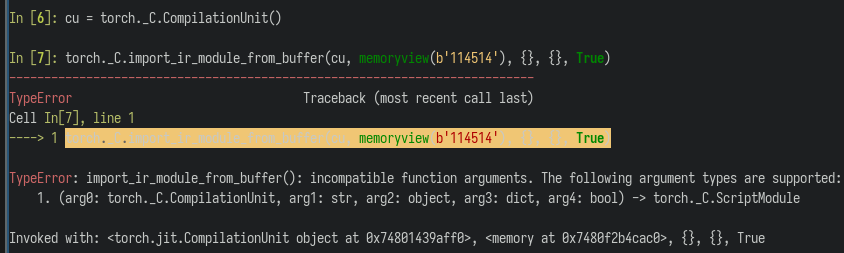

python -m meshflow.main_mvdream \
--config image3d/coarse.instantngp.yaml \
seed=1234 input=~/gun.jpg art_style=realistic
%%{init: {'theme': 'dark', 'themeVariables': { 'darkMode': true }}}%%
xychart-beta horizontal
title "Image3D Run Time"
x-axis ["w/o Overmind", "Cold", "Warm"]
y-axis "Time (s)" 0 --> 140
bar [123.48, 137.8, 109.0]
# Use monkey patching
import overmind.api
overmind.api.monkey_patch_all()
pipeline = DiffusionPipeline.from_pretrained(
"stabilityai/stable-diffusion-xl-refiner-1.0"
)
# ... or explicitly load
from overmind.api import load
pipeline = load(
DiffusionPipeline.from_pretrained,
"stabilityai/stable-diffusion-xl-refiner-1.0",
)
#!/usr/bin/ruby
# vim: set ft=ruby:
# Overmind hook points required for this module
# Not actually a Ruby file, just abusing the syntax highlighting
# Name this file `overmind.cfg`,
# put it at the root of your module,
# and call `overmind.api.monkey_patch_all()`
guidance.imagedream_utils.model_zoo::build_model
guidance.mvdream_utils::MVDreamModelData.load
guidance.tsr_controlnet_utils::ControlNetPipeline._load_pipeline
guidance.tsr_controlnet_utils::ControlNetPipeline._load_legacy_sd_context
guidance.tsr_controlnet_utils::InpaintingControlNetPipeline._load_pipeline
# Use memoryview
import overmind.api
def load_bulky_data(key):
data: bytes = get_bulky_data(key)
return {
'key': key,
'data': memoryview(data),
}
data = overmind.api.load(load_bulky_data, '23333')
(Oversimplified)
pipe = DiffusionPipeline.from_pretrained(
"stabilityai/stable-diffusion-xl-refiner-1.0"
)
# This results a 12GB pickle, costs 14.2s
import pickle
a = pickle.dumps(pipe)
# This costs 6.3s
pipe = pickle.loads(a)
# ... didn't count TCP time!
pipe = DiffusionPipeline.from_pretrained(
"stabilityai/stable-diffusion-xl-refiner-1.0"
)
# OvermindPickler put tensors into shared memory!
# This results a 152 bytes pickle, costs 14s
# Previously costs only 1.55s, this could be optimized
a = OvermindPickler.dumps(OvermindPickler.dumps(pipe))
# This costs 0.15s
import pickle
a = pickle.loads(pickle.loads(a))
def _reduce(storage: torch.UntypedStorage):
device = storage.device
storage = storage.cpu()
frag = hoarder.put(storage)
return (_rebuild, (frag, device))
def _rebuild(frag, device) -> torch.UntypedStorage:
mv: memoryview = borrower.borrow(frag)
storage: UntypedStorage = _make_untyped_storage(mv)
if device.type == 'cpu':
return storage
elif device.type == 'cuda':
return storage.cuda(device)
class SharedMemory:
@classmethod
def create(cls, size):
fd = libc.memfd_create('overmind', os.O_RDWR)
os.ftruncate(fd, size)
return cls(fd=fd)
# Pass pid & fd to client
@classmethod
def rebuild(cls, pid, fd):
fd = os.open(f'/proc/{pid}/fd/{fd}', os.O_RDWR)
return cls(fd=fd)
绕过了 POSIX shm
不用纠结 SCM_RIGHTS 那一坨难看的 API
aka. 需求演进、遇到的坑 & 解决方案
SOLUTION: 我先把它 import 进来！
# On client
def diffusers_dyn_module_workaround():
from diffusers.utils.constants import HF_MODULES_CACHE
modpath = Path(HF_MODULES_CACHE)
modpath = modpath / "diffusers_modules/__init__.py"
spec = importlib.util.spec_from_file_location(
"diffusers_modules", modpath,
)
mod = importlib.util.module_from_spec(spec)
sys.modules["diffusers_modules"] = mod
vae = AutoencoderKL.from_pretrained(
"stablediffusionapi/night-sky-yozora-sty",
subfolder="vae", torch_dtype=torch.float16,
)
StableDiffusionControlNetImg2ImgPipeline.from_pretrained(
checkpoint,
custom_pipeline="stable_diffusion_controlnet_img2img",
controlnet=[controlnet_tile, controlnet_depth],
vae=vae,
torch_dtype=torch.float16,
safety_checker=None,
)
SOLUTION: 服务端根据标记获取 cache 中的 model
# On client
def load(self, fn, *args, **kwargs):
...
def replace_ref(obj):
if (ref := getattr(obj, '_overmind_ref', None)):
return ref
else:
return obj
args, kwargs = walk_obj(
(args, kwargs), pre=replace_ref
)
...
def _move_torch_module_to_cpu(self, model):
st = model.state_dict(keep_vars=True)
dev_map = {k: v.device for k, v in st.items()}
if set(dev_map.values()) == {torch.device('cpu')}:
return model
for k, v in st.items():
dev = v.device
v = v.to('cpu')
v._prev_device = dev
st[k] = v
return reducer.RebuildTorchModuleOnClient(
model, dev_map,
)
class RebuildTorchModuleOnClient:
def __reduce__(self):
return (self._rebuild, (self.model, self.dev_map))
@staticmethod
def _rebuild(model, dev_map):
st = model.state_dict(keep_vars=True)
st = {k: v.to(dev_map[k]) for k, v in st.items()}
model.load_state_dict(st, strict=False, assign=True)
return model
def _move_torch_module_to_cpu(self, model):
...
# Remove AlignDevices hooks
from accelerate.hooks import remove_hook_from_module
remove_hook_from_module(model, True)
# Remove accelerate added warning hooks
model.__dict__.pop('to', None)
model.__dict__.pop('cuda', None)
model.__dict__.pop('xpu', None)
model.__dict__.pop('npu', None)
...
from bitsandbytes.nn.modules import Params4bit, Int8Params
def _reduce_bnb_param(p):
dev, data = p._prev_device, p.data
qs_dict = p.quant_state.as_dict(packed=True)
return (_rebuild_bnb_param, (
type(p), data, qs_dict, dev,
))
def _rebuild_bnb_param(typ, data, qs_dict, dev):
return typ.from_prequantized(data, qs_dict, device=dev)
def bitsandbytes_quirks():
ForkingPickler.register(Params4bit, _reduce_bnb_param)
ForkingPickler.register(Int8Params, _reduce_bnb_param)

// torch/csrc/jit/python/script_init.cpp
auto m = py::handle(module).cast<py::module>();
m.def(
"_load_jit_module_from_bytes",
[](const std::string& bytes) {
auto bytes_copy = copyStr(bytes);
ExtraFilesMap extra_files = ExtraFilesMap();
return torch::jit::parse_and_initialize_jit_module(
bytes_copy, bytes.size(), extra_files);
}
);
nit： 其实是两遍，因为最后没有用这个 flatbuffers 的接口，仍然是 zip 的那个，不存在最后的对齐到 16 bytes
SOLUTION: 自己写一个 zero copy 版的！
m.def(
"import_ir_module_from_buffer_0copy",
[](std::shared_ptr<torch::jit::CompilationUnit> cu,
py::buffer buffer) {
auto info = buffer.request();
imemstream in((char*)info.ptr, info.size);
c10::optional<at::Device> optional_device;
torch::jit::ExtraFilesMap extra_files_map;
auto ret = import_ir_module(
std::move(cu),
in,
optional_device, extra_files_map,
true, false);
return ret;
});
# Assuming data in thread local is not important,
# just drop them
from _thread import _local
ForkingPickler.register(_local, lambda _: (_local, ()))
def _reduce(obj):
zipped = io.BytesIO()
torch.jit.save(obj, zipped)
inflated = convert_to_stored_zip(zipped)
return (_rebuild, (memoryview(inflated),))
def _rebuild(payload: memoryview):
cu = torch._C.CompilationUnit()
m = overmind._C.import_ir_module_from_buffer_0copy(
cu, payload,
)
return torch.jit._recursive.wrap_cpp_module(m)
def pytorch_jit_pickle_quirks():
register(torch.jit.RecursiveScriptModule, _reduce)
register(torch.jit.ScriptModule, _reduce)
register(torch.jit.ScriptFunction, _reduce)
# pickle dataclass type instead of just put it into a
# container, which will not survive after torch.jit.save
from sfast.utils import flat_tensors
from sfast.utils.flat_tensors import \
flatten_bytes, flatten_dict, \
unflatten_bytes, unflatten_dict
def flatten_dataclass(obj):
d = dict((field.name, getattr(obj, field.name))
for field in dataclasses.fields(obj))
pickled = pickle.dumps(obj.__class__)
return flatten_bytes(pickled) + flatten_dict(d)
def unflatten_dataclass(tensors, start):
pickled, start = unflatten_bytes(tensors, start)
clz = pickle.loads(pickled)
content, start = unflatten_dict(tensors, start)
return clz(**content), start
flat_tensors.flatten_dataclass = flatten_dataclass
flat_tensors.unflatten_dataclass = unflatten_dataclass
来点 zero copy 的 torch.UntypedStorage !
m.def("_make_untyped_storage", [](py::buffer b) {
auto info = new py::buffer_info(b.request());
return reinterpret_steal<py::object>(THPStorage_New(
c10::make_intrusive<at::StorageImpl>(
c10::StorageImpl::use_byte_size_t(),
info->size,
at::DataPtr(
info->ptr,
info,
[](void* ptr) {
py::gil_scoped_acquire gil;
auto b = static_cast<py::buffer_info*>(ptr);
delete b;
}, at::DeviceType::CPU
), /*allocator=*/nullptr, /*resizable=*/false)
)
);
});